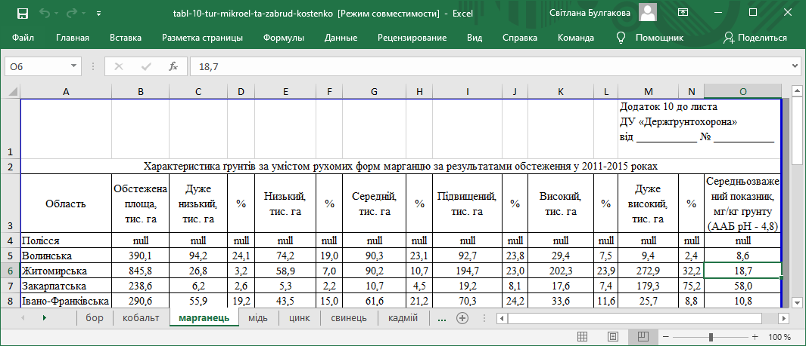

Крок 9. Вікно редагування додаткової інформації. Вкладка «Викиди»
Експерт з перевіреного джерела отримує дані для введення значень по викидам, тобто значень хімічних елементів та сполук, отриманих в результаті випробувань. Для прикладу додамо дані Волинської області по елементу «Марганець».
